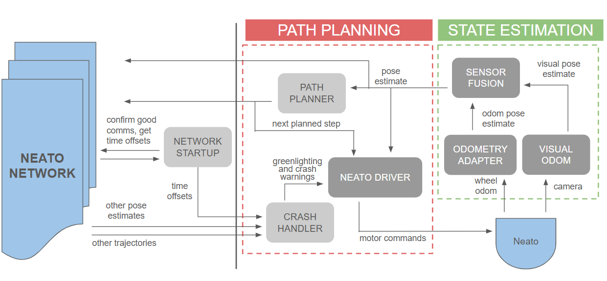
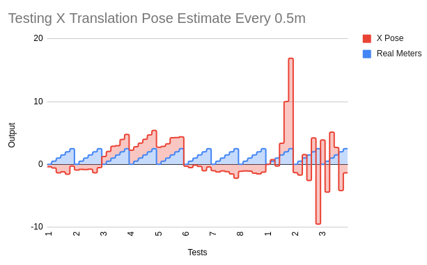
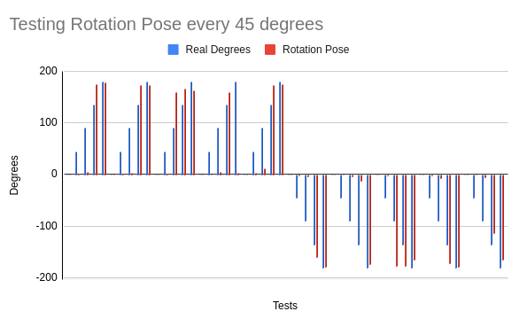
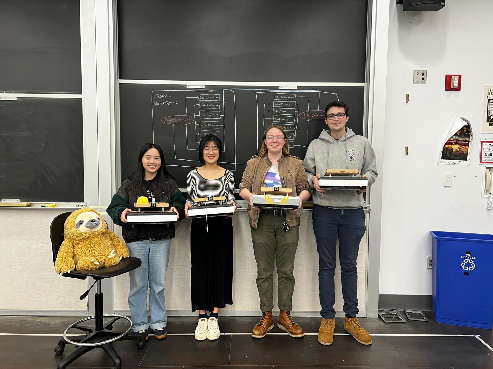

01 / The System
Below is a diagram of the fleet communication system for the local software of a single robot (Neato). The system is designed to be decentralized, allowing each robot to independently plan and adjust its path as information is shared across the network. The system consists of two main sub-pipelines: state estimation and path planning.
State Estimation
Errors tend to accumulate when working in a multi-agent system or even during internal measurements. When the goal is collision avoidance, obtaining an accurate pose estimate becomes critical. The state estimation sub-pipeline utilizes an Extended Kalman Filter to combine pose estimates from wheel odometry data and visual odometry, resulting in greater accuracy.
Path Planning
The path planning sub-pipeline discretizes the environment and uses the A Star algorithm to compute the shortest path to the goal. The next planned step and current pose estimate are shared across the network, establishing a hierarchy for robot navigation.

02 / Monocular Visual Odometry
This algorithm utilizes a single mounted camera to generate a pose estimate for each robot in the fleet. Visual odometry follows several key steps (highlighted), but the use of a single camera introduces a critical system flaw. Photogrammetry-based pose extraction requires a depth map (typically obtained through a stereo vision system with two cameras) which is essential for determining rotation and translation between frames.
MVO Pipeline Overview
1) Calibrate robot camera for intrinsic and extrinsic parameters
2) Image is received from the robot every 1 second
3) SIFT-based feature extraction
4) FLANN-based feature matching and filtered matches by distance threshold
5) Estimate motion with essential matrix decomposition
6) Publish a pose
System Calibration
Testing consisted of manually pushing the Neato 0.5m every 6 seconds and compared the recorded distance to the real distance. (A velocity of 0.083 m/s was just a magic number that worked the best with matching features between each frame.)
Below is a graph showing the differences in the outputted X pose (in red) compared to each 0.5m in real life (in blue). There was a huge inconsistency in the output scaling and positive/negative sign for each test which seemed very unreliable.
The first 8 test we performed used cv2.recoverPose() to extract the rotation and translation. In the second set of tests, we tried directly implementing the single value decomposition math to extract the matrices. With the random spikes, we decided to continue with the OpenCV function. The next step to extracting out the correct translation is to compute the scale in each image. Using this function has a certain scale ambiguity that we cannot control.
The second set of calibration tests we performed was with the rotation matrix. Unlike the translation, this yielded very accurate results over time. In this calibration test, the real angle and computed angles were measured every 45 degrees going from 0 to 180 degrees clockwise and counter-clockwise. In the graph below, blue represents the manual movement of turning and the red is the output. The initial 45-90 degrees were very inaccurate as the estimation motion would always be significantly lower. However, as the Neato reaches 180 degrees, the angles would adjust to be more accurate, usually settling within 10 degrees.


Concluding Thoughts
The MVO pipeline was able to output pose estimates that were occasionally within tolerances. However, in the end, this pipeline was not fully implemented due to the unpredictable errors and inaccuracy without depth maps. With more time, creating visualizations rather than command line debugging would be helpful in understanding where the errors lie.
Thank you to an amazing team and check out our project website!
